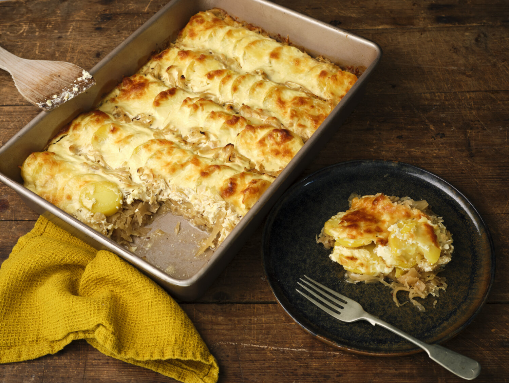

Sauerkraut Casserole

Description
Spicy and baked with love.
Ingredients
- Potatoes
- Salt
- Onion
- Sauerkraut
- Butter
- Caraway Seeds
- Apple Juice
- Black pepper
- Sour Cream
- Vegetable Broth
- Mustard
- Emmental
Steps
-
Wash the potatoes and cook in boiling salted water for about 20 minutes .
Drain, rinse, peel and cut into slices.
Peel the onion and chop finely. Drain the sauerkraut.
-
Heat butter in a pan. Sauté onions in it. Add caraway seeds and roast briefly.
Add sauerkraut and sauté briefly. Deglaze with apple juice and cook covered for about 15 minutes.
Season with salt and pepper. Chop the parsley.
-
Preheat the oven to 200 degrees (fan oven: 180 degrees) .
Layer the sauerkraut and potatoes in a fan shape in a baking dish.
Mix the crème fraîche with the vegetable broth, mustard and cheese.
Spread mixture over vegetables. Bake the casserole for about 45 minutes .